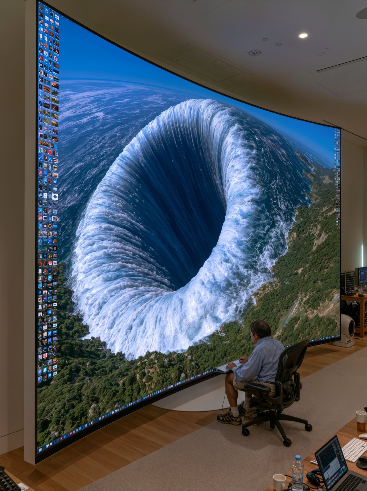
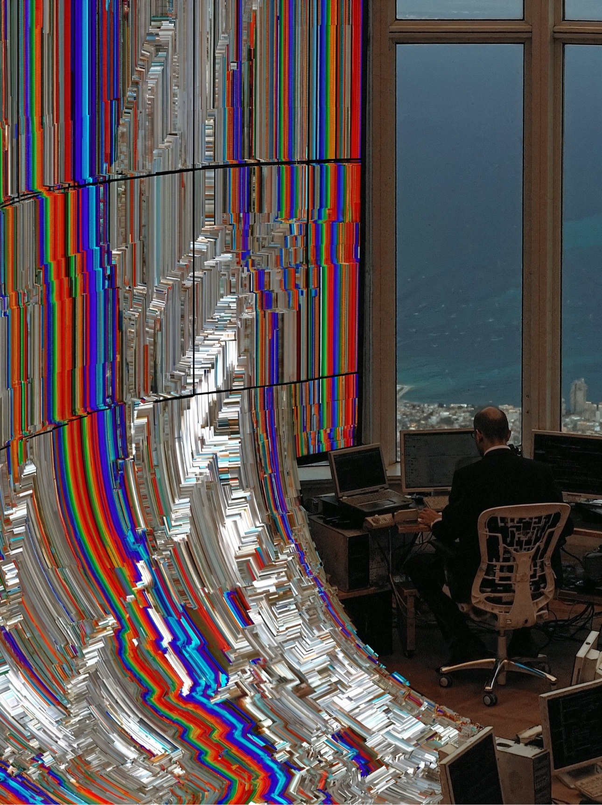
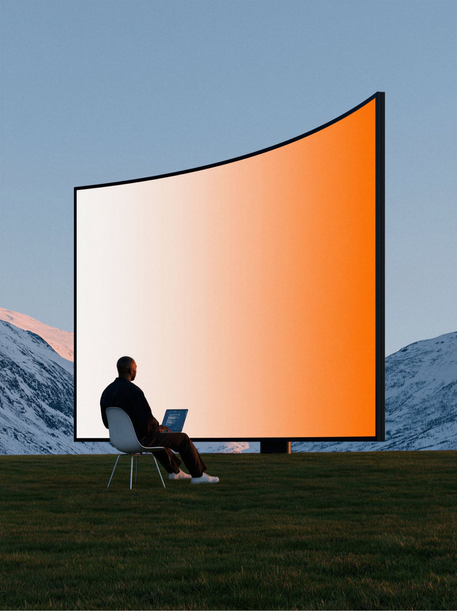

MirrorMind, in my own words
I wanted a place where I could figure out who I was before I had to decide what to do next.
I kept noticing that the hardest part of a big decision was never the lack of information, because I could always find another list of pros and cons, and the hardest part was that I did not yet have a clear sense of which version of myself I was actually choosing for, so I built MirrorMind as a personal agent that learns from my daily life over time and helps me turn a vague, heavy anxiety into one small experiment I can try in real life.
MirrorMind，我自己的话
我想要一个地方，让我在做决定之前，先弄清楚自己到底是谁。
我一直发现，做一个重大决定最难的地方从来不是信息不够，因为我随时都能再找一份优缺点的清单，而真正难的是，我还没有想清楚自己到底是在为哪一个版本的自己做选择，所以我做了 MirrorMind，它是一个会随着时间慢慢了解我的个人助手，会从我的日常记录里认识我，再把那种说不清楚又很沉重的焦虑，变成一个我可以在现实生活里真正去试一试的小实验。
01 · The problem
Students are not short of options, and that is exactly why they feel stuck.
I think a lot of student anxiety comes from identity, because when you do not have a steady anchor, or when you are carrying too many possible selves at the same time, a choice about a major or a first job stops being a practical question and starts feeling like a question about who you are going to become, and that is why more advice often makes things worse instead of better, since every new option just adds another self to compare yourself with.
My idea is simple in the way I want it to feel, even though the thinking behind it comes from judgment and decision making and from Stanford’s Designing Your Life, because I want MirrorMind to help a student name the identity they are living in for this season, not a permanent label, and then let the next decision be judged against that season, which makes the decision lighter without pretending that the uncertainty has disappeared.
01 · 问题
学生缺的不是选择，恰恰是选择太多，才会觉得卡住。
我觉得很多学生的焦虑其实都来自身份认同，因为当你没有一个稳定的锚点，或者当你同时背着太多可能的自己时，选专业或者选第一份工作就不再是一个实际的问题，而会变成一个关于你到底要成为谁的问题，所以更多的建议往往不但帮不上忙，反而会让事情更糟，因为每一个新的选项都会再多出一个可以拿来和自己比较的自己。
我的想法在感觉上是很简单的，虽然它背后的思考来自判断与决策的研究，也来自斯坦福的《人生设计课》，因为我希望 MirrorMind 能帮一个学生说清楚自己这个阶段到底处在什么样的身份里，而不是给他贴一个永久的标签，然后再让他用这个阶段的身份去衡量下一个决定，这样决定会变轻一些，但我也不会假装那些不确定感就此消失了。
02 · Why this matters now
The happiness curve broke, and the support system did not grow with the need.
For a long time, researchers described life satisfaction as a U-shaped curve, with young people at the high end and middle age in the dip, but since 2017 that pattern has broken in a way that worries me, because 18 to 25 year olds are now reported as the least happy age group, and at the same time schools and counselling services still cannot offer enough appointments, enough time, or enough affordable help for everyone who is quietly struggling with a decision that feels much bigger than a decision.
02 · 为什么是现在
幸福感的曲线已经变了，可是支持系统并没有跟着长大。
很长一段时间里，研究者都把生活满意度描述成一条 U 形曲线，年轻人处在比较高的一端，中年处在低谷，可是从 2017 年开始，这个规律已经以一种让我很在意的方式被打破了，因为 18 到 25 岁的年轻人现在被报告为幸福感最低的年龄段，而与此同时，学校和咨询服务仍然没有办法给每一个正在默默挣扎的人提供足够的预约、足够的时间，或者足够负担得起的帮助，尤其是当他们面对的那个决定，感觉起来远远不只是一个决定而已。
Gen Z respondents said they faced a mental health difficulty every month, according to Gallup (2025) as cited in my business plan.
每个月都会遇到心理困境的 Z 世代受访者比例，来自 Gallup（2025），引自我的商业计划书。
Young workers said they felt anxious or depressed several times a week, according to Gallup (2025) and The Hartford (2025) as cited in my business plan.
每周多次感到焦虑或抑郁的年轻职场人比例，来自 Gallup（2025）和 The Hartford（2025），引自我的商业计划书。
People under 30 were reported as diagnosed with clinical depression, which is about double the level reported in 2017, as cited in my business plan.
30 岁以下被诊断为临床抑郁的人群比例，大约是 2017 年水平的两倍，引自我的商业计划书。
People aged 18 to 34 turned to self-guided digital mental health tools, according to the Bipartisan Policy Center (2025) as cited in my business plan.
转向自导式数字心理健康工具的 18 到 34 岁人群比例，来自 Bipartisan Policy Center（2025），引自我的商业计划书。
Users said a digital app or agent felt more comfortable and lower pressure than speaking directly to a human counsellor, as cited in my business plan.
觉得数字应用或智能体比直接和人类咨询师沟通更舒服、压力更小的使用者比例，引自我的商业计划书。
Users named low cost and affordability as the primary reason they chose a digital tool, as cited in my business plan.
把低成本和价格亲民作为选择数字工具首要原因的使用者比例，引自我的商业计划书。

03 · The jam experiment, and why I keep coming back to it
When I give myself too many options, I do not become freer, I just stop moving.
Iyengar and Lepper (2000) showed this in a very concrete way, because when shoppers were offered 24 kinds of jam, 60 percent stopped to look but only 3 percent bought anything, while when they were offered 6 kinds of jam, 40 percent stopped and 30 percent bought, which is a tenfold difference in buying, and I think the same pattern shows up in life decisions, where a longer list makes comparison louder and regret heavier, while a smaller, clearer set makes it possible to actually choose and learn from the choice.
03 · 果酱实验，为什么我总会想起它
当我给自己的选项太多时，我并没有变得更自由，我只是停下来不动了。
Iyengar 和 Lepper（2000）用一个很具体的方式说明了这一点，因为当购物者面前有 24 种果酱时，虽然有 60% 的人会停下来看，可是最后只有 3% 的人买了东西，而当面前只有 6 种果酱时，虽然只有 40% 的人停下来，却有 30% 的人买了东西，购买率相差了整整十倍，我觉得同样的规律也会出现在人生选择里，选项越长，比较的声音就越大，事后的后悔也越重，而选项越少、越清楚，人反而才有可能真正做出选择，并且从这个选择里学到东西。
Try it · 试一下：
6 options, 40% stopped, 30% bought · 6 个选项，40% 的人停下，30% 的人购买
This connects to bounded rationality and satisficing, because Simon (1955, 1956) argued that people usually look for an option that is good enough rather than a mathematically perfect one, and it also connects to decision fatigue, because Baumeister and colleagues (1998) showed that rational choice draws on a limited resource that gets tired with repeated decisions. 这也和有限理性以及满意决策有关，因为 Simon（1955，1956）认为，人们通常寻找的是一个足够好的选项，而不是数学上完美的选项，同时这也和决策疲劳有关，因为 Baumeister 等人（1998）指出，理性选择会消耗一种有限的心理资源，而这种资源在反复做决定之后是会累的。
04 · My product, as I would explain it to a friend
I do not want you to import your whole life on day one, because that is exactly how good tools lose people.
I learned this from watching how quickly people abandon complicated apps, and from my own experience with tools that ask for everything before they give anything back, so I designed MirrorMind around one very small daily habit, where you write a few honest lines about your day, your feelings, or a dilemma that is sitting in your chest, and over weeks that quiet record becomes a portrait of your patterns, your strengths, and the contradictions you keep running into, which is much more useful to me than a one-time test that pretends to know you from twenty questions.
When a real turning point arrives, like choosing between a big company and a start-up after graduation, I do not want MirrorMind to hand you a cold list of pros and cons, because I want it to help you understand why you are torn in the first place, how each path fits what you have actually cared about in your own records, and what a small, real-life simulation could teach you, so that an abstract anxiety can become one concrete experiment, like a conversation, a shadow day, or a two-week trial, and the result of that experiment can then feed back into how you understand yourself.
04 · 我的产品，如果我要向朋友解释
我不希望你在第一天就把整个人生都导进来，因为好工具就是这样把人吓跑的。
这一点是我从观察人们多快放弃复杂应用的过程中学到的，也是从我自己使用那些还没给任何回报就先要走一切信息的工具的经历里学到的，所以我把 MirrorMind 设计成一个非常小的日常习惯，你每天只需要写几句真实的话，关于你的一天、你的情绪，或者一件一直压在你心里的纠结，而在几周之后，这份安静的记录就会慢慢变成一幅关于你的画像，包括你的行为模式、你的优势，以及你总会反复遇到的那些内在矛盾，这对我来说，远比一份号称用二十道题就能了解你的测试要有用得多。
当一个真正的转折点到来时，比如毕业后到底要去大公司还是去创业，我不希望 MirrorMind 只给你一份冷冰冰的优缺点清单，因为我更希望它能帮你理解自己到底为什么会纠结，每一条路和你自己记录里真正重视的东西到底合不合拍，以及一个小小的、真实生活里的模拟到底能教会你什么，这样一种抽象的焦虑就可以变成一个具体的实验，比如一次谈话、一次跟岗体验，或者一次为期两周的尝试，而这个实验的结果又可以反过来帮你更了解自己。

Understand · 了解自己
I start with a short profile about your upbringing, values, interests, and goals, and then I let daily chat and records do the slow work of showing me who you are becoming, rather than fixing you into one type.
我会先从一份简短的画像开始，了解你的成长经历、价值观、兴趣和人生目标，然后让日常的聊天和记录慢慢告诉我你正在成为谁，而不是一开始就把你固定成某一种类型。
Explore · 探索未来
I use decision simulation to help you imagine a path in lived terms, not in slogans, so you can compare what each future would actually feel like in a week of real life.
我会用决策模拟帮你从真实生活的角度去想象一条路，而不是用口号来想象，这样你就可以比较每一种未来在真实的一周生活里到底会是什么感觉。
Act · 做出行动
I turn the simulation into one action plan with one next step, because a plan that asks for forty steps at once is really just another way of postponing the decision.
我会把模拟变成一份只有一个下一步的行动计划，因为一份一下子要求四十步的计划，其实只是另一种拖延决定的方式。
On design, I care about feeling more than I care about showing off features, because a product that gives emotional value, calm, and a sense of being understood is the product people return to, while a product that only gives the objectively best answer can still leave a person feeling more anxious than before, and I also believe the page itself should stay simple, with deeper tools kept out of sight until a chat brings them out, so that using the product feels like participation and discovery rather than filling in another form.
在设计上，我更在意感觉，而不是炫耀功能，因为一个能给人情绪价值、平静感和被理解的感觉的产品，才是人们愿意一次次打开的产品，而一个只给客观最优答案的产品，哪怕答案是对的，也可能让人比之前更焦虑，同时我也相信页面本身应该保持简单，把更深的功能藏起来，等到聊天把它们带出来，这样使用产品时的感觉会更像参与和发现，而不是又在填一张表格。
05 · A small demo you can try here
I built this demo so you can feel the loop, not just read about it.
Nothing you type here is stored anywhere, and nothing leaves this page, because I want the demo to show the shape of the idea without asking you to trust a new product with your real diary on day one.
05 · 一个你可以在这里试试的小演示
我做这个演示，是希望你能感受到这个循环，而不只是读到它的介绍。
你在这里输入的任何内容都不会被保存，也不会离开这个页面，因为我希望这个演示能先让你看到这个想法的样子，而不用在第一天就要求你把真实的日记交给一个新产品。
Name your season · 说出你这个阶段的样子
Your season, in progress · 你这个阶段的样子，还在形成中
Choose the three prompts above, and I will turn them into a card you can share, while your private notes stay private. 选好上面三个问题，我会把它们变成一张你可以分享的卡，而你私人的记录仍然只属于你自己。
Chat, and watch a hidden tool appear · 聊天，让一个隐藏功能自己出现
In my design, deeper tools are not split across menus, and they appear when a conversation calls for them, so try typing “I’m stuck”, “simulate”, or “milestone” below. 在我的设计里，更深的功能不会被拆到不同的菜单里，它们会在对话需要它们的时候出现，所以你可以在下面试着输入 “I’m stuck”、“simulate” 或者 “milestone”。
I think a stuck feeling is often not a lack of information, and it is more often a clash between something you value and something that is pressuring you, like wanting freedom while also fearing a wrong choice, so I would trace that clash through your past notes and then suggest one small test, rather than giving you a verdict. 我觉得卡住的感觉往往不是因为信息不够，而更可能是一种拉扯，一边是你重视的东西，一边是正在给你压力的东西，比如你想要自由，同时又害怕选错，所以我会从你过去的记录里找到这种拉扯，然后建议你去做一个小的尝试，而不是直接给你一个结论。
Instead of asking which path is better in the abstract, I would ask what two weeks inside each path could teach you, and I would suggest one conversation in each world, so you can compare lived evidence rather than imagined futures. 与其抽象地问哪条路更好，我更想问你在每条路里待两周到底能学到什么，我会建议你在每一个世界里都去聊一次，这样你比较的就是真实生活里的证据，而不是想象中的未来。
I designed milestones as shareable proof that you moved, like testing one path this week, and I keep them separate from your diary on purpose, because you should be able to show growth without showing your worries. 我把里程碑设计成一种可以分享的、证明你确实往前走了一步的东西，比如这一周你真的去试了一条路，而且我有意把它和你的日记分开，因为你应该可以在不展示自己焦虑的情况下，展示自己的成长。
Why I prefer a personal agent to a generic chatbot · 为什么我更想要一个个人助手，而不是一个普通的聊天机器人
A generic chatbot can answer one question well, but it forgets you in the next session, while a personal agent remembers your pattern across weeks, explains why you personally are torn, and updates its understanding after every experiment, and that continuity is exactly why I think people prefer talking to Muse, because Muse is built to be a personal agent rather than a one-off answer machine, and I want MirrorMind to carry that same continuity into decisions about a life. 一个普通的聊天机器人可以很好地回答某一个问题，可是它会在下一次对话里忘记你，而一个个人助手会在几周的时间里记住你的模式，解释你个人到底为什么会纠结，并且在每一次实验之后更新它对你的理解，而这种连续性正是我觉得人们更喜欢和 Muse 对话的原因，因为 Muse 本来就是作为一个个人助手来设计的，而不是一个只给一次性答案的机器，我希望 MirrorMind 也能把这种连续性带进关于人生的决定里。
06 · Business, and how I want to prove it
I would rather validate the market first than build a perfect product that nobody opens.
I split the work into two parts that can live side by side, because on one side I need to build a prototype that does one loop well, which is daily recording, a seasonal identity card, and one decision experiment, and on the other side I need to run social media, starting on Xiaohongshu with life coaching methods and AI prompts, and only later revealing the product, so that I can put a website link in the account and watch how real people actually use it, which matters to me because the judges for a pitch are business people, and what they care about most is whether a product can really go to market, not whether the theory behind it is complete.
On monetisation, I think the honest structure is a free daily layer that keeps the habit alive, a paid layer for deeper decision work when a real turning point arrives, and a business-to-business-to-consumer package for tutoring institutions and student counselling centres, where MirrorMind can offer daily companionship and early, gentle triage, rather than replacing counsellors, and where privacy and a clear escalation boundary have to be part of the offer from the start, because otherwise schools will not trust it and students will not be honest in it.
06 · 商业，以及我想怎么证明它
我宁愿先验证市场，也不想做出一个很完美、却没有人打开的产品。
我把工作分成两个可以同时存在的部分，因为一方面我需要先做出一个原型，而且它只需要把一个循环做好，也就是日常记录、一张这个阶段的身份卡，和一个决策实验，另一方面我需要去做社交媒体运营，从小红书开始，先从人生教练的方法和 AI 指令这类内容做起，等到后面再转到我们自己做的软件，这样我就可以在账号里放上网站链接，并且真正观察人们到底是怎么使用它的，这对我来说很重要，因为评委其实都是做生意的人，他们最在意的就是这个产品到底能不能真的走向市场，而不是它背后的理论到底完不完整。
在变现上，我觉得比较诚实的结构是，先有一个免费的日常层，让这个习惯能够持续下去，再有一个付费的深层服务，专门用在真正到来的转折点上，另外还有一个面向补习机构和学生咨询中心打包的合作模式，在这个模式里，MirrorMind 可以提供日常的陪伴和早期温和的分流，而不是代替咨询师，而且隐私保护和一条清楚的转介边界必须从一开始就成为这个合作的一部分，不然学校不会信任它，学生也不会在里面说真话。

I need to be clear about what MirrorMind is not, because that boundary is part of why I think schools could trust it, and it is not therapy, it does not diagnose, and it does not replace a counsellor, and it is also not a fixed personality label, since I want it to be a low-cost, everyday tool for self-knowledge, exploration, and action, with sharing kept to identity and milestones, and with the diary itself kept private.
我需要先说清楚 MirrorMind 不是什么，因为这条边界本身就是学校有可能信任它的原因之一，它不是心理治疗，它不能做诊断，它也不能代替咨询师，同时它也不是一个固定的人格标签，因为我希望它只是一个低成本的、每天都可以用的自我了解、探索未来和采取行动的工具，分享的部分只限于身份和里程碑，而日记本身一定要保持私密。
07 · Theory, mapped to the product
Every feature in my product has a reason behind it, and I want that reason to be visible.
07 · 理论，和产品之间的对应关系
我产品里的每一个功能背后都有一个原因，而我希望这个原因是看得见的。
| My idea · 我的想法 | Theory · 理论 | What changes in the product · 在产品里到底改变了什么 |
|---|---|---|
| Emotional value matters more than the objectively best answer · 情绪价值比客观最优答案更重要 | Bounded rationality; decision fatigue; emotional design (Simon, 1955; Baumeister et al., 1998; Norman, 2004) | Calm comes first, and the next step is chosen to be good enough and testable, rather than perfect on paper. 平静感先来，下一步只要足够好、可以去试就好，而不要求在纸面上完美。 |
| Jam experiment · 果酱实验 | Choice overload (Iyengar & Lepper, 2000; Schwartz, 2004) | Options are narrowed before commitment is asked for. 在要求你做出承诺之前，选项会先被收窄。 |
| Simple page, with tools that appear through chat · 简单的页面，功能通过聊天出现 | Hick-Hyman law; progressive disclosure; self-determination theory (Hick, 1952; Nielsen, 2006; Deci & Ryan, 2000) | One visible action stays on the page, and deeper tools appear through curiosity, which supports autonomy and competence. 页面上只留一个看得见的动作，更深的工具会通过好奇心出现，这样可以支持自主感和胜任感。 |
| Student confusion and identity · 学生的迷茫和身份认同 | Uncertainty-identity theory; self-concept clarity (Hogg, 2000, 2007, 2012; Hohman & Hogg, 2015) | A temporary, clear identity anchor replaces a permanent label. 一个暂时的、清楚的身份锚点，代替了一个永久的标签。 |
| Low-cost digital support · 低成本的数字支持 | Self-guided digital mental health adoption (Bipartisan Policy Center, 2025; Gallup, 2025, as cited) | Help is always available, lower in cost, and lower in social pressure than a first appointment. 帮助随时都在，成本更低，而且比第一次预约带来的社交压力要小。 |
| Identity badges and sharing · 身份徽章和分享 | Reflective design; positive computing (Norman, 2004; Calvo & Peters, 2014) | The badge is shared, and the diary stays private, because growth, not screen time, is the goal. 徽章可以分享，日记保持私密，因为目标是成长，而不是屏幕停留时间。 |
08 · Sources, and one honest note
I want this page to feel credible, and I also do not want to overstate what I have verified.
Statistics on this page come from the academic evidence section of my business plan, and canonical experiments are cited directly, while survey figures are presented as cited in that plan, so I would verify the full reports before a formal pitch or publication, and I deliberately do not use a viral sharing figure as a headline number here, because its supplied source still needs independent checking.
08 · 来源，和一句实话
我希望这个页面看起来可信，同时我也不想夸大我已经核实过的东西。
这个页面上的统计数据来自我商业计划书里的学术证据部分，其中经典实验是直接引用的，而调查数据是按照商业计划书里的引用来呈现的，所以在正式路演或者公开发布之前，我会先去核实完整的报告，而且我有意不在这里把某一个病毒式传播的数字当作标题数字来用，因为它所对应的来源仍然需要独立核查。
- Baumeister, R. F., Bratslavsky, E., Muraven, M., & Tice, D. M. (1998). Ego depletion: Is the active self a limited resource? Journal of Personality and Social Psychology, 74(5), 1252–1265.
- Calvo, R. A., & Peters, D. (2014). Positive computing: Technology for wellbeing and human potential. MIT Press.
- Deci, E. L., & Ryan, R. M. (2000). The “what” and “why” of goal pursuits. Psychological Inquiry, 11(4), 227–268.
- Hick, W. E. (1952). On the rate of gain of information. Quarterly Journal of Experimental Psychology, 4(1), 11–26.
- Hogg, M. A. (2007). Uncertainty–identity theory. Advances in Experimental Social Psychology, 39, 69–126.
- Iyengar, S. S., & Lepper, M. R. (2000). When choice is demotivating. Journal of Personality and Social Psychology, 79(6), 995–1006.
- Nielsen, J. (2006). Progressive disclosure. Nielsen Norman Group.
- Norman, D. A. (2004). Emotional design: Why we love (or hate) everyday things. Basic Books.
- Simon, H. A. (1955). A behavioral model of rational choice. Quarterly Journal of Economics, 69(1), 99–118.
- Sources as cited in the business plan, to be verified before formal use: Helliwell et al. (2024); Gallup (2025); The Hartford (2025); SAMHSA (2022); Bipartisan Policy Center (2025). 商业计划书中引用的来源，正式使用前需要核实：Helliwell 等（2024）；Gallup（2025）；The Hartford（2025）；SAMHSA（2022）；Bipartisan Policy Center（2025）。
For judges and partners, I think the next proof is not a longer deck, and it is a working prototype link, a Xiaohongshu funnel, and a small group of students who return after seven days and can say, in their own words, what changed for them.
对于评委和合作方来说，我觉得下一步的证明不是一份更长的演示文稿，而是一个可以打开的原型链接、一个小红书的转化漏斗，以及一小群在七天之后还会回来的学生，他们可以用自己的话说清楚，到底有什么东西对他们来说变了。